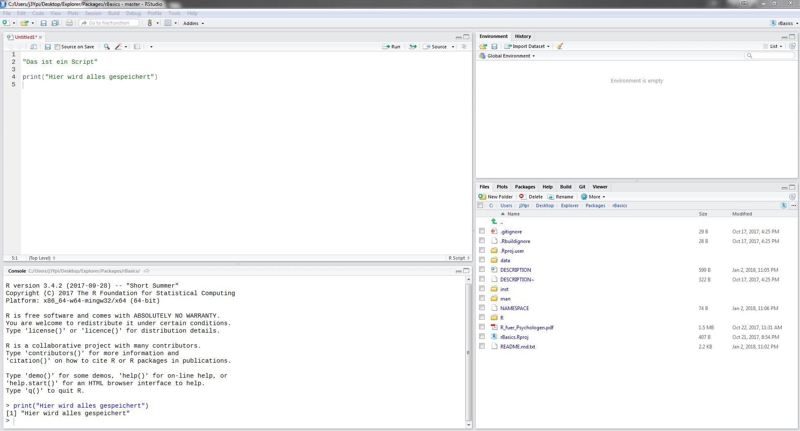

vignettes/01_Setup.Rmd
01_Setup.RmdDieses Tutorial setzt keine Vorkenntnisse in R voraus. Somit ist es für jeden geeignet, der R lernen möchte. Aber auch jene, die bereits Vorkenntnisse mit Base R haben und in die Weiten des tidyverse aufbrechen wollen, kommen auf ihre Kosten. Dabei wird ein besonderer Fokus auf Probleme gelegt, mit denen empirische Wissenschaftler konfrontiert werden.
Das Tutorial ist in 6 Teile gegliedert, die sich in ihrem Umfang unterscheiden.
tidyverse, Fehler- und Warnmeldungen, Übungen)Nach dem Setup hast Du bereits eine voll funktionsfähige Arbeitsumgebung und bist bereit mit R durchzustarten. Das zweite Kapitel ist der mit Abstand wichtigste Abschnitt. Jeder, der schon mehrfach mit Daten gearbeitet hat, weiß, dass die Datenvorbereitung dabei die meiste Zeit in Anspruch nimmt. Das spätere Auswerten und das Zeichnen von Graphen funktioniert immer mit wenigen kurzen Befehlen, die demselben Schema folgen. Dich auf alle Gefahren und Hürden eines unsauberen, unstrukturierten Datensatzes vorzubereiten ist Ziel von Teil 2. Da dies der umfangreichste und auch schwierigste Abschnitt ist, werden Dir zwei Übungsblöcke in einer interaktiven Lernumgebung zur Verfügung gestellt. Diese verlangen von Dir das Anwenden des gelernten auf zwei andere Datensätze (Transfer!). Teil 3 bringt dir die wichtigsten deskriptiven Maße und den Umgang mit fehlenden Werten bei. In Teil 4 lernst Du Funktionen kennen und Graphiken zu zeichnen, die Excel Anwender vor Neid erblassen lassen. Der 5. Teil beschäftigt sich mit induktiver Statistik. Der letzte Teil dient zum einen als Ausblick auf die großartigen Dinge, die ein fortgeschrittener R Nutzer programmieren kann und zum anderen werden einige grundlegende Konzepte in R wie Datenstrukturen genauer erläutert. Es wird empfohlen, die Reihenfolge beim Bearbeiten einzuhalten. Auch wenn Du R bereits installiert hast, solltest Du Dir das Setup durchlesen.
Falls Probleme auftreten oder Dir im Laufe des Tutorials etwas auffällt, was unklar formuliert ist oder gar fehlt, ist es erwünscht, auf Github eine neue Issue zu eröffnen.
Programmieren lernen ist anders als Fremdsprachen lernen. Man lernt nicht zuerst alle Vokabeln und die Grammatik auswendig. Viel mehr lernt man nur die Grammatik in Form von grundlegenden Regeln und die wichtigsten Vokabeln. Alles andere schlägt man anwendungsbezogen immer wieder nach, bis man es auswendig kann. Es ist also keine Schmach für jede aufkommende Frage während der Übungen oder bei eigenen Projekten das Tutorial zur Hilfe zu verwenden. Im Gegenteil! Wichtig ist nur, dass man genau weiß, an welcher Stelle man suchen muss. Viel Spaß!
Bevor wir loslegen können, müssen wir erst einmal alles Notwendige installieren. Dabei muss zwischen der eigentlichen Programmiersprache namens R und der Programmierumgebung RStudio, in der Du in der gesamten Zeit arbeiten wirst, unterschieden werden.
Das Tutorial benötigt mindestens die R Version 3.3.3. Falls R bereits auf Deinem Laptop ist, stelle sicher, dass Du keine ältere Version installiert hast.
Windows:
Download R for Windows
base
Download R for Windows
macOS:
Download R for (Mac) OS X..pkg (z.B. R-3.5.1.pkg). Falls Du eine ältere Mac Version als El Capitan (10.11) besitzt, musst Du R-3.3.3.pkg herunterladen. Wenn Du Deine Mac Version nicht kennst, kannst Du erst einmal das neueste ausprobieren. R wird Dir dann mitteilen, ob Dein Betriebssystem zu alt ist.cmd + Leertaste, tippe Terminal ein und drücke auf Enter.Enter (Der Befehl ist zu lang, um im PDF vollständig angezeigt zu werden. Klicke hier, um zur Website zu gelangen).ruby -e "$(curl -fsSL https://raw.githubusercontent.com/Homebrew/install/master/install)" < /dev/null 2> /dev/nullbrew install openssl libgit2Linux:
ctrl + alt + t um den Terminal zu öffnen.sources.list zu öffnen.sudo gedit /etc/apt/sources.listsources.list. Für 16.04 benutzedeb https://cloud.r-project.org/bin/linux/ubuntu xenial-cran35/(Für andere Versionen xenial zu beispielsweise bionic oder trusty ändern.)
sudo apt-get update
sudo apt-get install r-base r-base-dev libssl-dev
sudo apt-get install libgit2-dev libcurl4-openssl-dev libxml2-devR ist die Programmiersprache. Um komfortable mit einer Programmiersprache arbeiten zu können, braucht man allerdings auch eine Umgebung (auch IDE = Integrated Development Environment) genannt. Ohne ist programmieren oft mühsam. Eine Programmierumgebung für R heißt RStudio. Wenn R installiert ist, kann man unter folgendem Link die Programmierumgebung RStudio herunterladen. Drücke dazu auf den Download Button für RStudio Desktop (Open Source License) und downloade die für dein Betriebssystem richtige Version.
Die Oberfläche von RStudio ist in vier Teile unterteilt (siehe Abbildung 1). Unten links befindet sich die Konsole. Dort kannst du eine Zeile Code nur einmalig ausführen. Wenn man später erneut den selben Befehl ausführen möchte, muss man ihn neu eingeben. Oben links befindet sich das so genannte Script. Du kannst mehrere Scripts gleichzeitig geöffnet haben. Der große Unterschied zur Konsole ist das Speichern jeder Zeile deines Codes, sodass Du später lediglich erneut das Script ausführen musst, um genau dieselben Ergebnisse erneut zu erhalten. Der vom Script erzeugte Output wird in der Konsole angezeigt. Man kann zwischen Script und Konsole mit strg (cmd) + 1 / 2 wechseln. Um ein neues Script zu öffnen, drücke strg (cmd) + shift + N. Zum Ausführen drücke in der jeweiligen Zeile strg (cmd) + enter. Falls alles ausgeführt werden soll, drücke zuerst strg (cmd) + A und führe es dann aus. Gespeichert wird mit strg (cmd) + S. Oben rechts befindet sich die Environment. In dieser kannst Du sämtliche Datensätze und Variablen betrachten, die du erstellt hast. Unten rechts sind verschiedene Reiter abgebildet. Die wichtigsten für Dich sind Plots und Help. In Plots werden Dir wenig überraschend die erstellten Graphen und unter Help die Hilfen angezeigt. Wie letztere aufgerufen werden, wird unter Wo bekomme ich Hilfe? erklärt.

Um zu gewährleisten, dass Dein Code nicht nur auf Deinem Laptop funktioniert, ist es dringend notwendig das ständige Speichern des Workspaces auszustellen.
Tools/Global Options.../General
restore .RData into workspace at startup
Save workspace to .RData on exit zu never
Keine Sorge, auf das Speichern Deines Codes hat das keine Auswirkung.
R bietet von Beginn an eine Bandbreite von Funktionen. Da es R bereits seit vielen Jahren gibt, haben sich viele fähige Programmierer an die Arbeit gemacht, Funktionen zu schreiben, die die Funktionen von Base R erweitern. Packages sind kostenlose Erweiterungen von Dritten, die verschiedenste Aufgaben erheblich erleichtern können. Die Packages werden auf CRAN, auf Github oder auf Bioconductor geteilt. Es gibt mittlerweile mehr als 11 000 Packages alleine auf CRAN.
Um ein Package zu installieren, muss man install.packages() ausführen. Wichtig ist hierbei, dass der Packagename in Anführungszeichen geschrieben ist. Das Argument dependencies = TRUE installiert hierbei zusätzlich alle Packages, auf denen das gewünschte Package zugreift.
install.packages("packageName", dependencies = TRUE)Damit man auf die Funktionen des Packages zurückgreifen kann, muss das Package jedes mal aus der Bibliothek mithilfe von library() geladen werden. Hierbei sind keine Anführungszeichen notwendig.
library(packageName)Zuerst installieren wir mit dem Befehl alle notwendigen Packages auf Deinem Computer. Wofür jedes einzelnen davon zuständig ist, wirst du im Verlaufe des Tutorials erfahren. Die Installation kann einige Minuten in Anspruch nehmen.
install.packages(c("tidyverse", "here", "rio", "broom", "car",
"skimr", "ggpubr", "sjstats", "devtools",
"learnr", "psych", "lmerTest", "pwr",
"effsize"), dependencies = TRUE)Um auf die Übungsdatensätze und das interaktive Tutorial zugreifen zu können, musst Du das Package rBasics installieren. Allerdings befindet es sich nicht auf CRAN sondern Github. Der Befehl lautet daher etwas anders.
devtools::install_github("j3ypi/rBasics")Sollten bei der Installation von rBasics Fehler auftreten, liegt das bei macOS und Linux aller Wahrscheinlichkeit nach an einer fehlerhaften Installation des devtools Packages, welches wiederum auf externe Softwarepakete wie openssl zurückgreift. Führe noch einmal kleinschrittig die Installationsanleitung für Dein Betriebssystem aus. Falls es nicht funktionieren sollte, schreibe eine Issue auf Github.
Für Windows und natürlich sowieso für Linux gibt es jeweils eine einfache Möglichkeit die Version von R auf den neuesten Stand zu bringen. Für Windows brauchen wir dafür das Package installr. Allerdings ist es empfehlenswert den Updateprozess innerhalb von der RGui (also dem puren R) nicht von RStudio zu starten. Laden wir zuerst das Package.
library(installr)Anschließend updaten wir R mit nur einem Befehl. Während der Installation wird man unter anderem gefragt, ob man seine Packages mit in die neue Version nehmen will - unbedingt zustimmen!
updateR()In Linux updatest Du R wie jedes andere Programm mit
sudo apt-get update && sudo apt-get upgradeWas erst einmal nach Werbung für eine Selbsthilfegruppe in der U-Bahn klingt, ist das wohl stärkste Argument für Programmiersprachen im Gegensatz zu Programmen wie SPSS - die Community! Das schöne an Programmiersprachen ist, dass in der Regel irgendjemand schon einmal genau dasselbe Problem gehabt hat, wie man selbst. Wenn man nach einer Fehlermeldung oder spezifischen Frage im Internet sucht, ist meist der erste Vorschlag das Forum Stackoverflow. Sollte noch niemand genau das selbe Problem gehabt haben, kann man auf Stackoverflow auch selbst eine Frage stellen. Die extrem zuvorkommende Community antwortet erfahrungsgemäß innerhalb von wenigen Stunden. Häufig hat man aber auch bereits nach rund zehn Minuten eine Antwort von einem der fünf Millionen aktiven Forenmitgliedern. Außerdem gibt es für jedes Package und jede Funktion eine Dokumentation auf CRAN. Diese kann man entweder mit F1 bei Öffnen der Funktion, per ?funktionsName (z.B. ?mean) oder über die PDF Dokumentationen im Internet aufrufen.